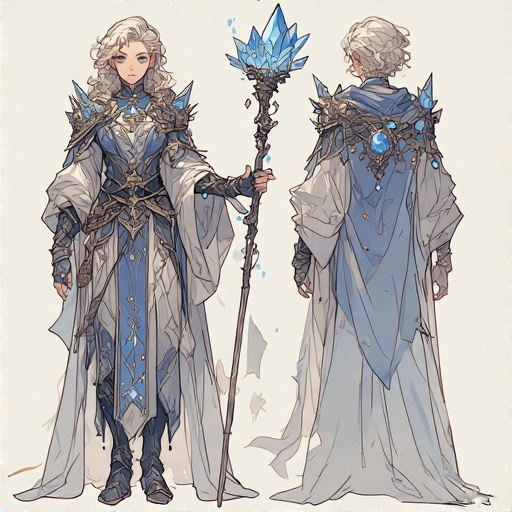
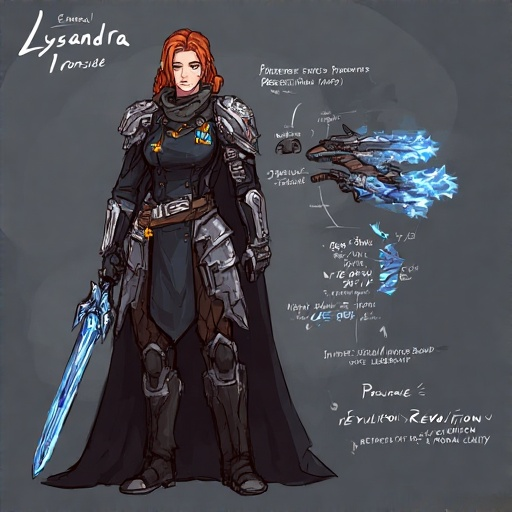
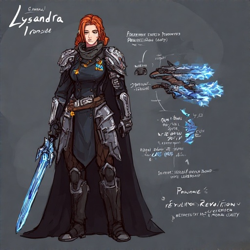
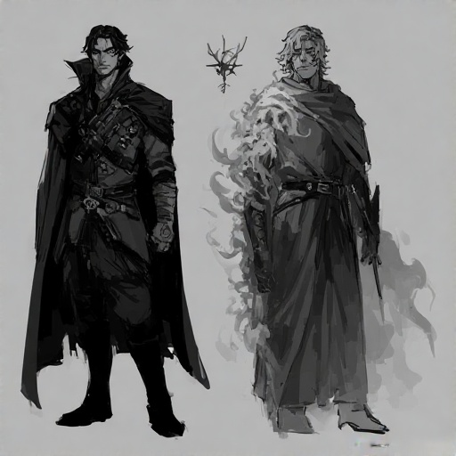
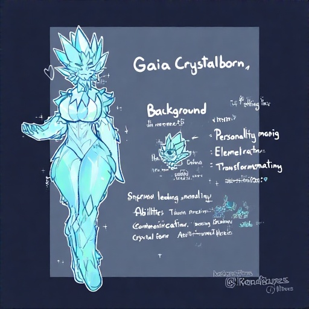
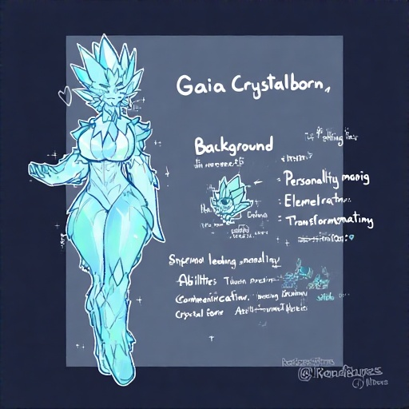
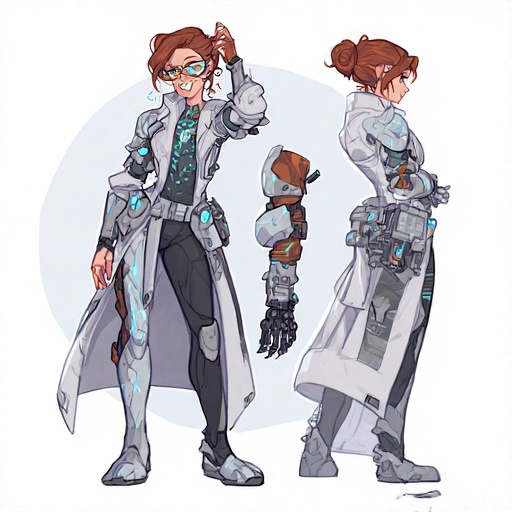
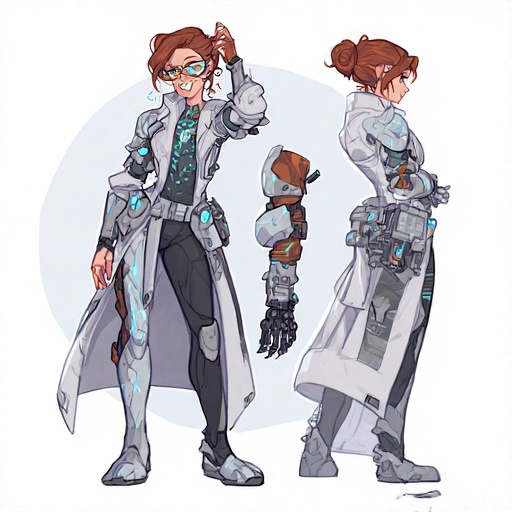
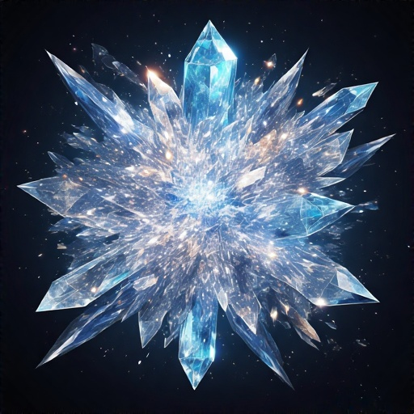

Crystal Echoes – Characters & Story
Playable Characters
-
Lyra Brightstone (Protagonist): Een jonge kruidenvrouw met het mysterieuze vermogen om stemmen uit kristallen te horen. Ze groeit van onzekere vluchteling uit tot een leider die magie en technologie verbindt.

-
Cade Ironheart: Voormalig keizerlijk ingenieur met een mechanische arm. Hij zoekt verlossing door zijn technische kennis voor het goede in te zetten.

-
Seraphina Valesong: Laatste leerling van de Crystal Sages, meester in oude magie en genezing. Ze leert haar wijsheid te delen in plaats van te verbergen.

-
Rook Stormchaser: Luchtpiraat met windmagie en acrobatische vechtstijl. Van schatzoeker groeit hij uit tot loyale vriend.
-
Ember Ashwalker: Overlevende van een nomadenstam uit vulkanisch gebied. Haar reis voert van wraak naar het vinden van een nieuwe familie.
-
General Lysandra Ironside: Keizerlijk officier die worstelt met haar loyaliteit en geweten. Ze wordt uiteindelijk een revolutionair.
 

-
Thorne Nightshade: Mysterieus figuur met schaduwmagie en dimensieshifting. Zijn ware motieven worden langzaam onthuld.

-
Gaia Crystalborn: Een wezen van pure kristalenergie, worstelend met menselijke emoties en identiteit.
 

Belangrijke NPC's
-
Emperor Valorian IX: Heerser van het rijk, geobsedeerd door onsterfelijkheid via kristalkracht.
-
The Resonant One: De ware antagonist, een duistere spiegel van Lyra uit een andere tijdlijn.
-
Crystal Sage Orion: Oude wijze die de groep begeleidt, zelfs na zijn offer als spirit.

-
Dr. Mira Vex: Briljant, maar gevaarlijk wetenschapper en Cade’s voormalige mentor.
 

-
The Crystal Chorus: Collectief bewustzijn binnen het kristalnetwerk, onthult de geschiedenis via visioenen.

Verhaalstructuur
Crystal Echoes volgt een episch avontuur in drie bedrijven, waarin de helden de balans tussen magie en technologie moeten herstellen. Spelers maken keuzes die invloed hebben op het verloop, de relaties en het lot van de wereld. De game combineert lineaire en open verhaalelementen, met flashbacks, droomsequenties en parallelle verhaallijnen voor een rijke, meeslepende ervaring.
Story and Narrative
3.1 Story Overview
Premise
Crystal Echoes speelt zich af in de wereld van Crystallis, waar enorme kristallen al millennia magische energie leveren. In de afgelopen decennia beginnen de kristallen te verzwakken en hun kracht te verliezen. Terwijl magie verdwijnt, ontwikkelt het Lumina Rijk 'Resonantie Technologie' om de laatste energie uit kristalfragmenten te halen. Het verhaal begint met een keizerlijke inval in een dorp waar een belangrijk kristalfragment is gevonden. De protagonist, een jonge dorpsbewoner met een mysterieuze band met de kristallen, ontsnapt en begint aan een reis die de waarheid achter het vervagen van de kristallen zal onthullen.
Themes
- Balance vs. Progress: De spanning tussen harmonie met de natuur en technologische vooruitgang.
- Identity and Purpose: Personages ontdekken hun ware zelf en vinden betekenis in een veranderende wereld.
- Unity in Diversity: Verschillende mensen met conflicterende achtergronden werken samen voor een gemeenschappelijk doel.
- Legacy and Responsibility: De gevolgen van daden uit het verleden en de verantwoordelijkheid om de toekomst te vormen.
- Hope in Adversity: Kracht en hoop vinden in moeilijke tijden.
High-Level Story Arc
- Act 1: Awakening – De protagonist ontsnapt met een kristalfragment, ontmoet metgezellen en ontdekt een unieke gave. Ze zoeken een legendarische Crystal Sage, terwijl het rijk hen opjaagt.
- Act 2: Revelation – De Crystal Sage onthult dat de kristallen verzwakken door een dimensionale scheur. De groep zoekt de zeven Elemental Nexus-punten om de scheur te sluiten, terwijl het rijk experimenteert en de situatie verergert.
- Act 3: Transformation – Een cataclysme opent de scheur gedeeltelijk, de wereld verandert en de groep raakt verspreid. Ze ontdekken een spiegelwereld en de ware antagonist. De balans tussen beide werelden moet worden hersteld.
Narrative Hook
Het spel opent met een droom waarin kristallen breken en een stem om hulp roept. De protagonist wordt wakker door het geluid van keizerlijke luchtschepen die het dorp binnenvallen. Dit zet direct het mysterie en het conflict neer en trekt de speler het verhaal in.
3.2 Game World
World of Crystallis
Crystallis is een wereld waar magie en technologie in een fragiel evenwicht samenkomen. Het landschap wordt gedomineerd door kristalformaties, van kleine uitsteeksels tot gigantische structuren. Deze kristallen hebben de beschaving gevormd en beïnvloeden architectuur, cultuur en samenleving.
Belangrijke Regio's
- The Central Plains: Hart van het rijk, ontwikkeld met magitek, uitgeputte kristalbronnen, klassieke en industriële architectuur.
- The Eastern Forests: Oude bossen met kristalenergie, traditionele gemeenschappen, architectuur verweven met levende bomen.
- The Western Mountains: Ruwe hooglanden met grote kristallen, strijd tussen rijk en clans, mijnbouw en heilige plaatsen.
- The Southern Archipelago: Tropische eilanden met onderwaterkristallen, maritieme federatie, kristallen als koraal, kustarchitectuur.
- The Northern Wastes: Bevroren toendra met aurora-achtige kristallen, oude ruïnes, nomadische stammen en onderzoekers.
Historische Context
- Age of Formation: Kristallen verschijnen, magie ontstaat, eerste Crystal Sages.
- Age of Harmony: Hoogtepunt van magische beschaving, bouw van Nexus-punten, kristalresonantie-technieken.
- Age of Conflict: Oorlogen om kristallen, opkomst en ondergang van rijken, vroege magitek.
- Imperial Era: Opkomst van het Lumina Rijk, versneld kristalverval, sociale ongelijkheid.
- Present Crisis: Kristallen vervagen zichtbaar, keizerlijke expansie, dimensionale anomalieën, groeiend verzet.
Culturele Elementen
- Imperial Culture: Menselijke dominantie over kristallen, gestructureerde samenleving, militaire mode, kunst en muziek gericht op technologie en glorie.
- Traditionalist Culture: Kristallen als natuurkrachten, egalitaire gemeenschappen, natuurlijke kleding, kunst en muziek in harmonie met de natuur.
- Mercantile Culture: Kristallen als handelswaar, meritocratie, praktische kleding, innovatieve kunst en muziek.
- Nomadic Culture: Kristallen als voorouderlijke geesten, familiebanden, symbolische kunst en muziek met kristaltonen.